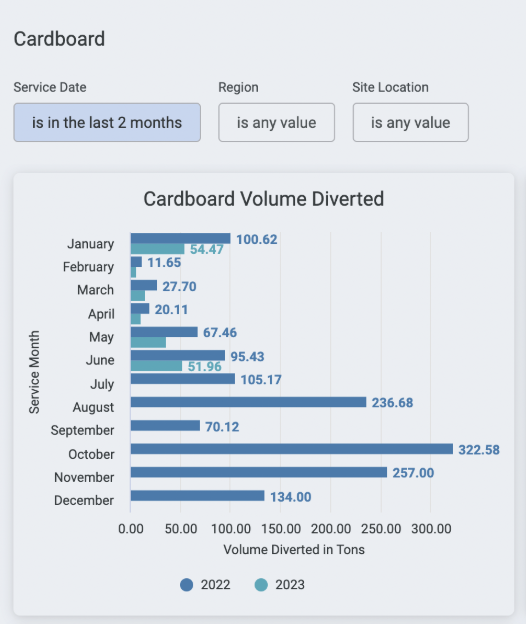

Heuristic evaluations are useful for stretching a limited UX research budget, because they help you find likely issues without having to test with participants. Normally, perform uristic evaluations with three to five expert participants, because they find 70%-80% of the usability issues. After that, additional participants provide diminishing returns.
Fited two aditional experts and used Jakob Nielsen's 10 Usability Heuristics for User Interface Design. We each evaluated the interface on our own. Our evaluations were time boxed to one hour, and we each collected our findings in our individual spreadsheets. We then met to collate our findings. We ranked each Heuristic individually on a four point scale, and we documented one example for each of the catastrophic heuristics.

Example: After selecting a new value for a filter, the data does not refresh, but the user see the value of the new filter.
Here, it appears as if the old data (18 months) is true for the new filter ("is in the last 2 months")

Example: Color is used inconsistently, even within a single page view.

In the above example: the user will assume that the orange in the bar graph and the orange in the bar chart are the same. We need to be cautious about securing this calendar